Nicola visited Israel in 2018 on an 8-day Christian pilgrimage — and it is a trip that is genuinely impossible to fully put into words. The Sea of Galilee, Jerusalem's Old City, Masada rising from the Judean Desert, the extraordinary crossing into Bethlehem — these are places that carry the weight of thousands of years of history, faith and human story. For Irish Christians in particular, seeing the places of the New Testament come to life is one of the most profound travel experiences imaginable.
Nicola travelled to Israel in 2018 with a friend on an organised Christian pilgrimage — 8 days and 7 nights covering the length and breadth of the country, from the Mediterranean coast at Tel Aviv and Caesarea up through the Galilee region and down to Jerusalem, the Dead Sea and Masada. It is an itinerary that covers an extraordinary amount of ground and an even more extraordinary amount of history.
Israel is not a typical tourist destination for Irish travellers — it is a place you go to with a specific purpose, whether that is faith, history, or sheer curiosity about one of the most complex and fascinating regions on earth. What surprised Nicola most was how immediate and visceral the experience of the biblical landscape is — these are not reconstructed heritage sites but real places, with real continuity to the stories of the New Testament.
The trip was organised through Israel Christian Tours and covered everything from accommodation and transfers to specialist guides — a Jewish Israeli guide for most of the trip and a Muslim Palestinian guide for the visit to Bethlehem, which gave a fascinating dual perspective on the land and its stories.
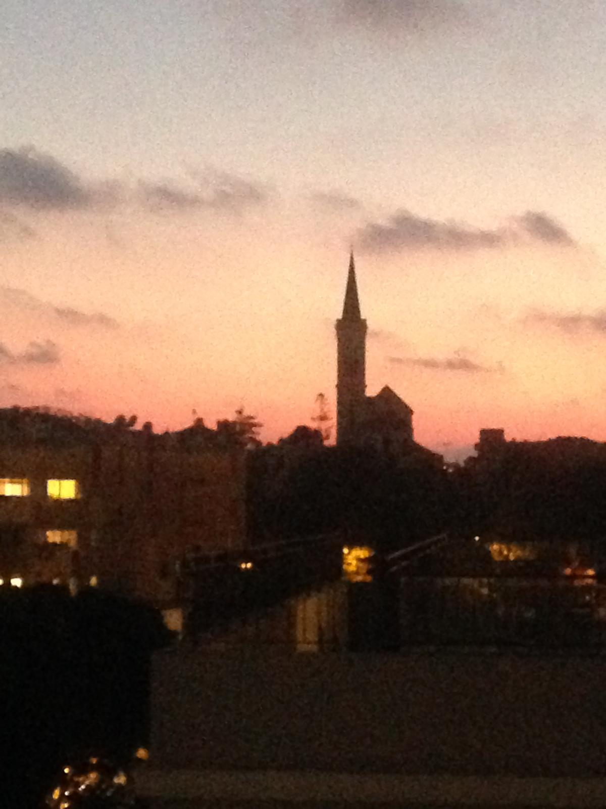
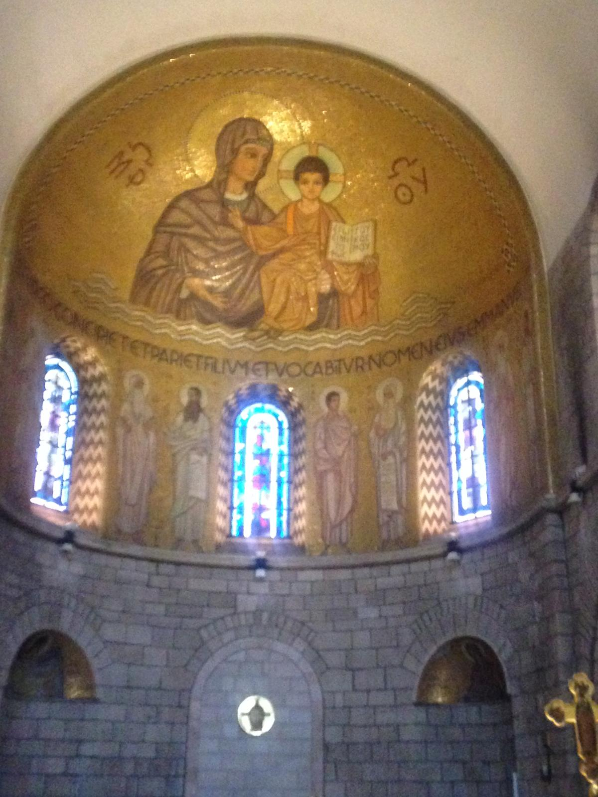
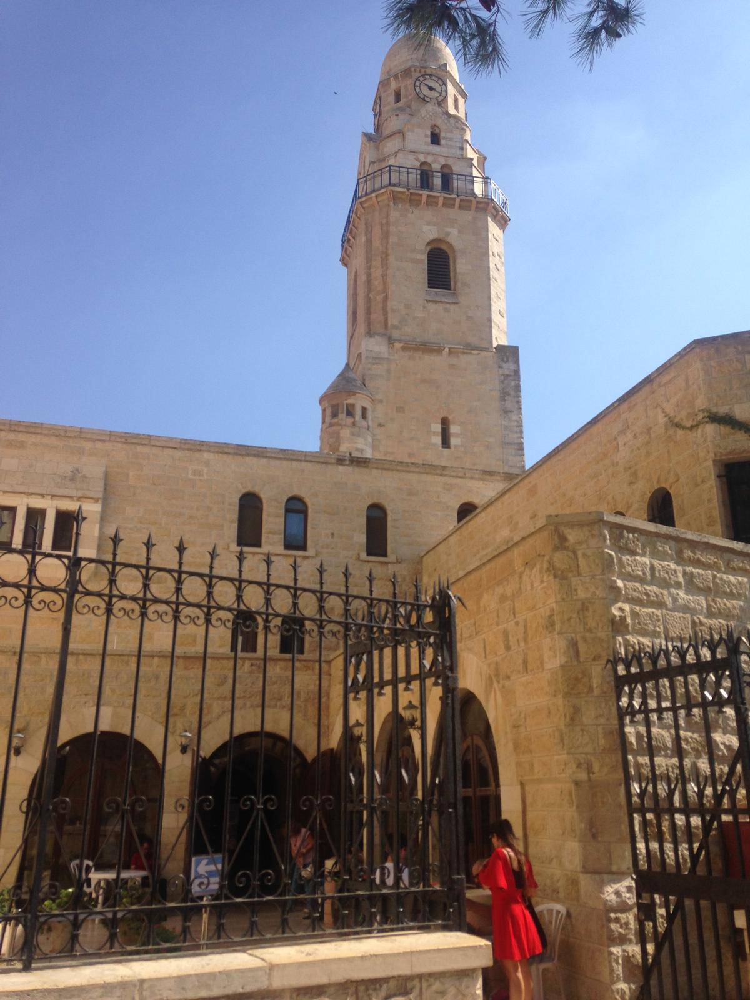
The Sea of Galilee was the absolute highlight of the entire trip. This is where Jesus spent the majority of his ministry — preaching on the shores, calling his disciples from their fishing boats, walking on the water, calming the storm. Knowing all of that as you look out across the calm surface of the lake gives it an atmosphere that is genuinely unlike anywhere else on earth.
The group crossed the Sea of Galilee by boat — a beautiful, peaceful crossing that gave time to take in the landscape and reflect on what it all meant. From there the itinerary took in Capernaum, the centre of Jesus' ministry, Tabgha where the miracle of the loaves and fishes took place, and the Mount of Beatitudes where the Sermon on the Mount was preached.
Nicola was baptised in the Jordan River during the trip — one of those once-in-a-lifetime experiences that people who have done it describe as deeply moving and utterly unforgettable. The river where John the Baptist baptised Jesus, still flowing, still clear — it is remarkable.
The group also ascended to the Golan Heights — a reminder that Israel is a country where ancient history and modern geopolitics exist side by side. The military presence on the Heights is visible and sobering, and the panoramic view across the Hula Valley and towards Mount Hermon is extraordinary.
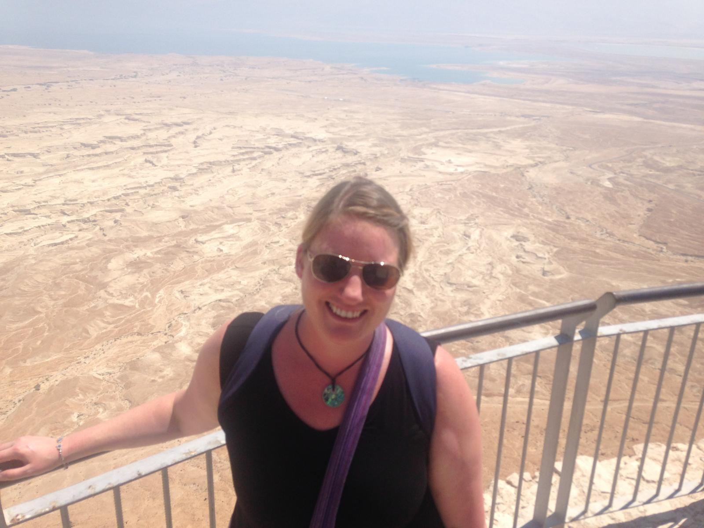
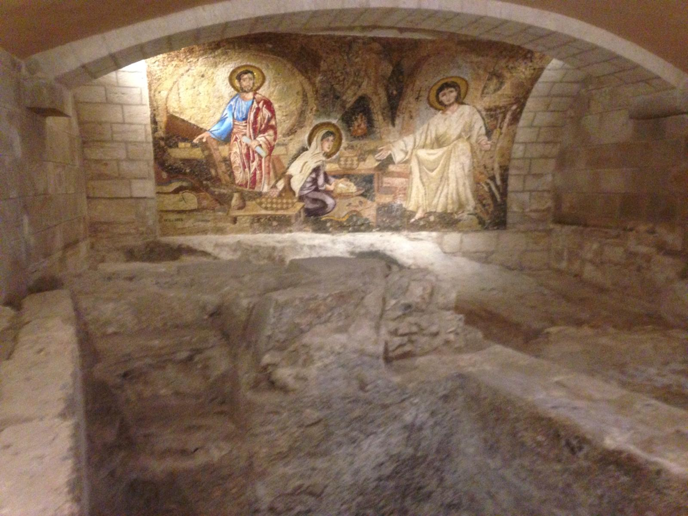
Jerusalem is one of the great cities of the world in every sense — ancient, layered, complex, beautiful, contested and completely unlike anywhere else on earth. The Old City alone contains sites of profound significance for Christianity, Judaism and Islam within walking distance of each other, which gives it an atmosphere of extraordinary intensity.
The itinerary covered the Mount of Olives with its panoramic view of the city, the Garden of Gethsemane where Jesus prayed before his arrest, the Western Wall — the holiest site in Judaism — and the Temple Mount. Walking the Via Dolorosa through the winding lanes of the Old City to Calvary and the Church of the Holy Sepulchre, which houses the traditional sites of both the Crucifixion and the Resurrection, is an experience that is deeply moving regardless of your personal faith.
The visit to Yad Vashem — Israel's official Holocaust memorial — was as powerful and important as the visit to Dachau. It is a place that should be on every traveller's list, not just those visiting on a religious pilgrimage. The exhibitions are extraordinarily well done and the weight of what happened is impossible to escape.
Masada — reached by cable car from the Judean Desert floor — is one of the most dramatic archaeological sites in the world. The fortress-palace built by Herod the Great on an isolated cliff, the last stand of the Jewish Zealots against the Romans, the extraordinary views across the Dead Sea — it is a place of real power and beauty.
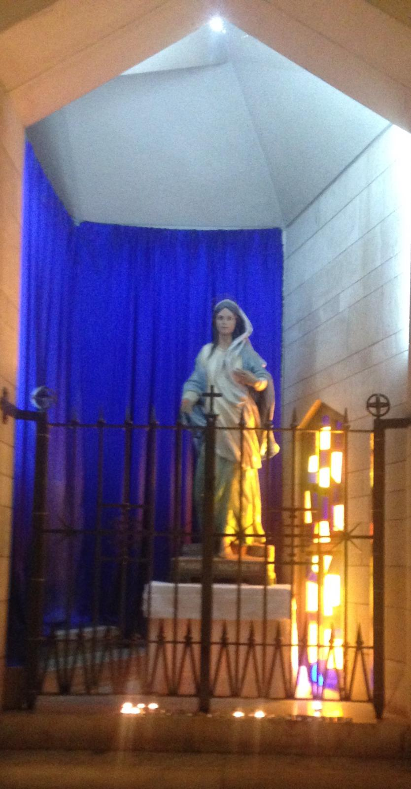
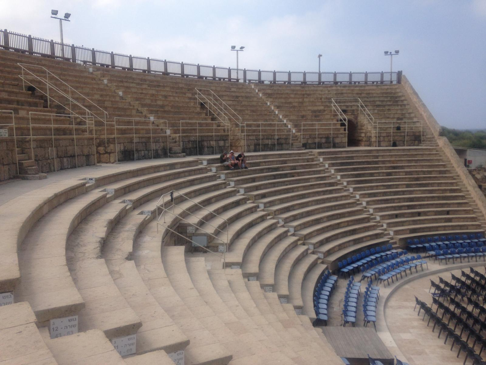
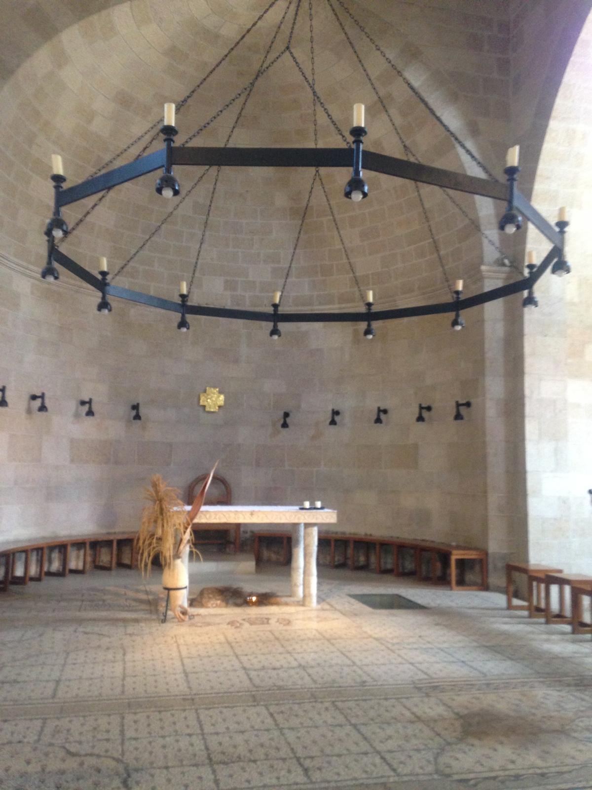
Floating in the Dead Sea is one of those bucket list experiences that genuinely lives up to the hype. At nearly 1,300 feet below sea level — the lowest point on the surface of the earth — the extraordinary salt concentration means you float effortlessly, reading a newspaper if you fancy. The mineral-rich mud is supposed to be extraordinary for your skin. The landscape around the Dead Sea is stark, otherworldly and beautiful in its own dramatic way.
The route along the Mediterranean coast took in Caesarea — the Roman city built by Herod the Great and one of the most impressive archaeological sites in Israel. The amphitheatre is still used for concerts today. The coastal setting is stunning and the scale of what Herod built here is breathtaking.
The old city of Jaffa — one of the oldest cities in the world — was the first stop of the trip, a short walking tour through beautiful alleys with views from the hilltop across the Mediterranean. An extraordinary way to begin a journey through a country where history is measured in millennia rather than centuries.
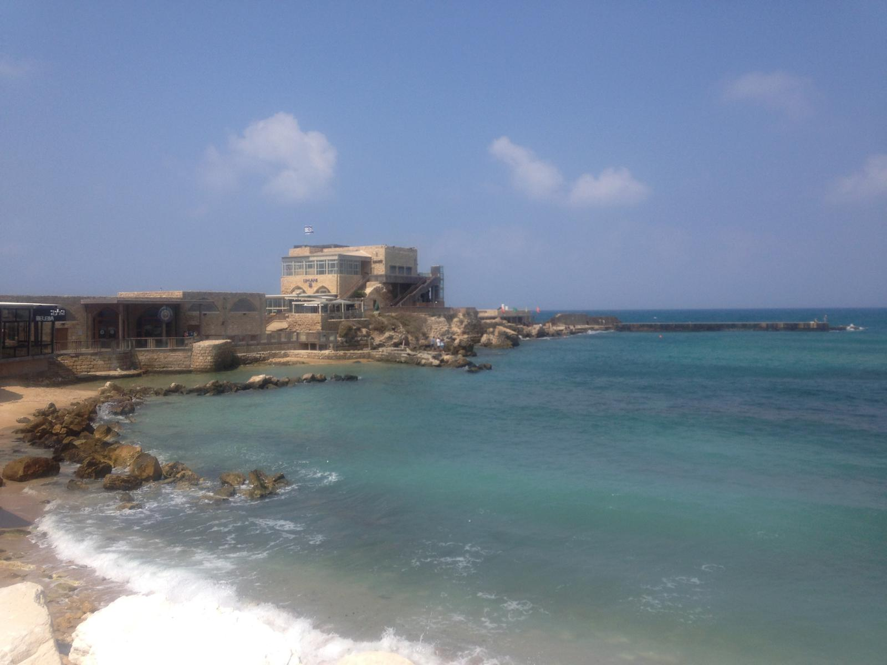
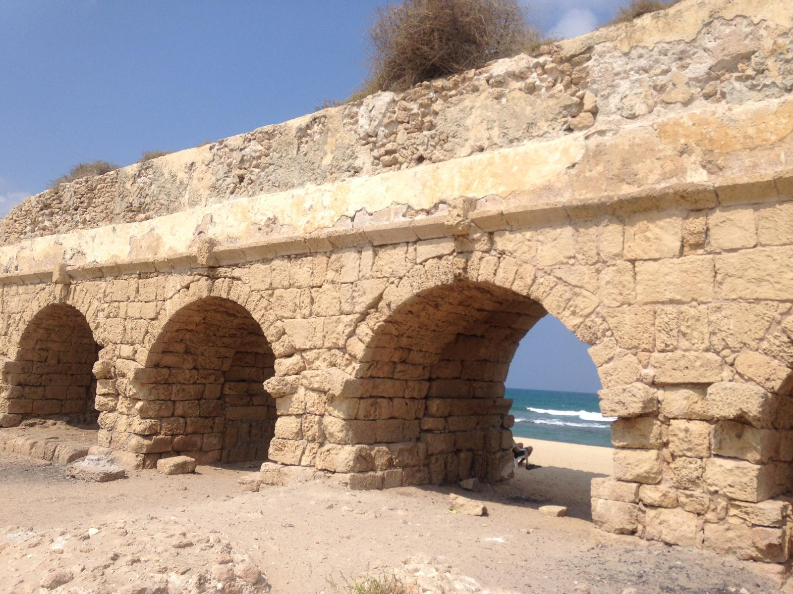
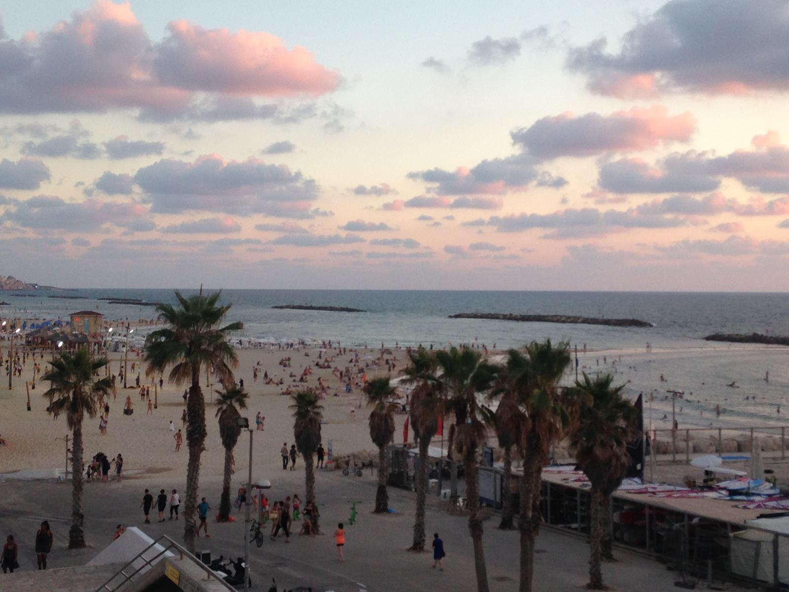
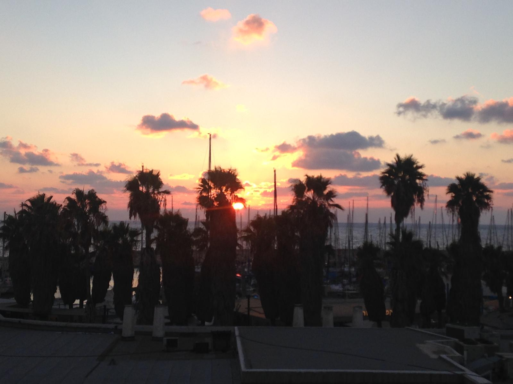
The visit to Bethlehem was one of the most interesting and thought-provoking parts of the entire trip. Bethlehem is in the West Bank — Palestinian territory — and crossing from Israel into Palestine is an experience in itself. At the checkpoint, the Jewish Israeli guide who had accompanied the group throughout the trip was replaced by a Muslim Palestinian guide who took over for the visit.
It was a fascinating illustration of the complexity of the region — two guides, two perspectives on the same land and the same stories, both knowledgeable, both proud of their connection to these places. The Palestinian guide's knowledge of the biblical sites in Bethlehem was extraordinary.
The Church of the Nativity — built on the site traditionally identified as the birthplace of Jesus — is one of the oldest continuously operating Christian churches in the world. Manger Square outside the church has an atmosphere all of its own. Whatever your faith or lack of it, standing in Bethlehem and knowing the story associated with this place is a remarkable human experience.
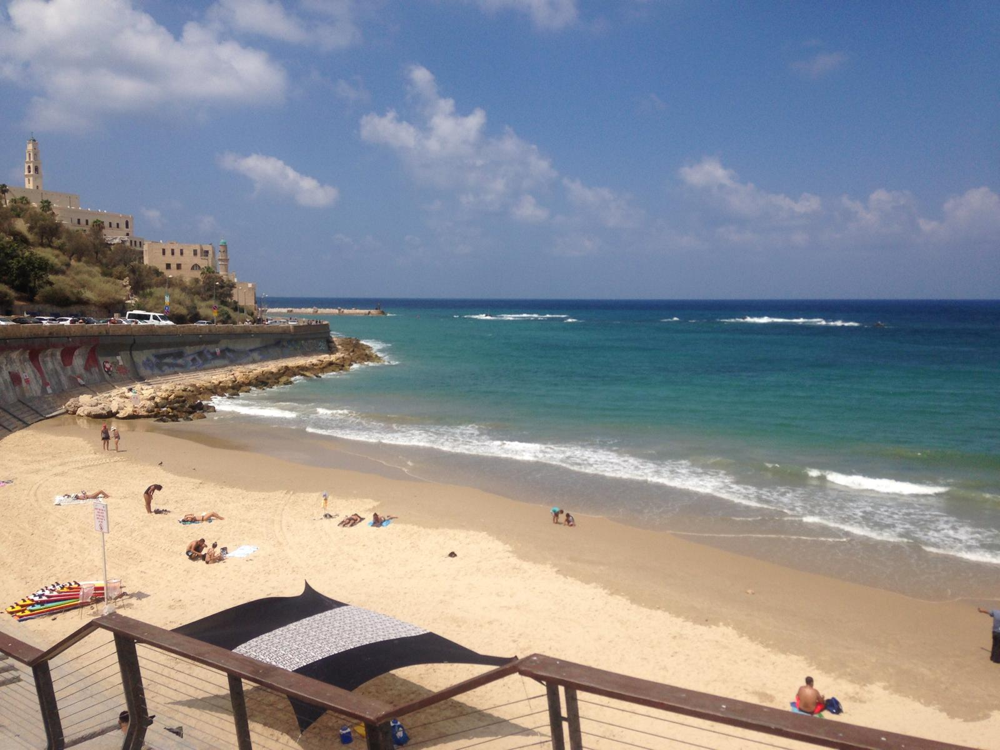
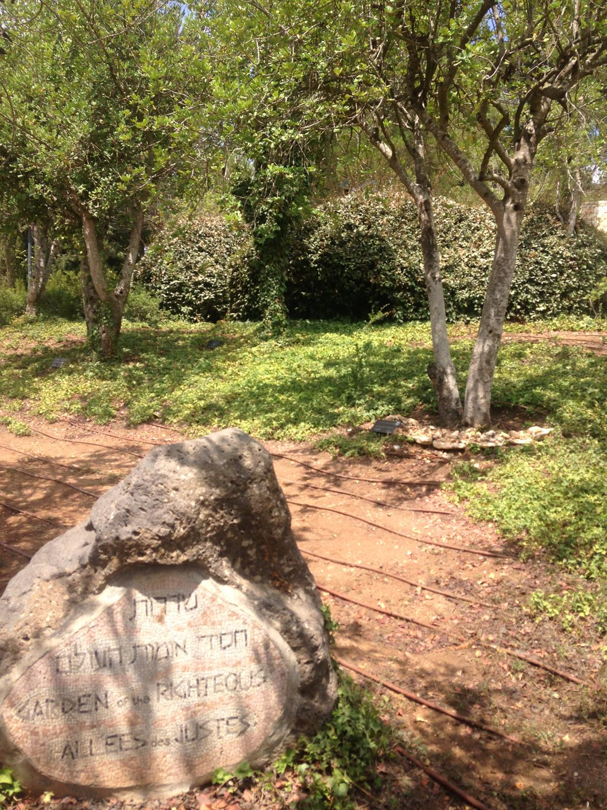
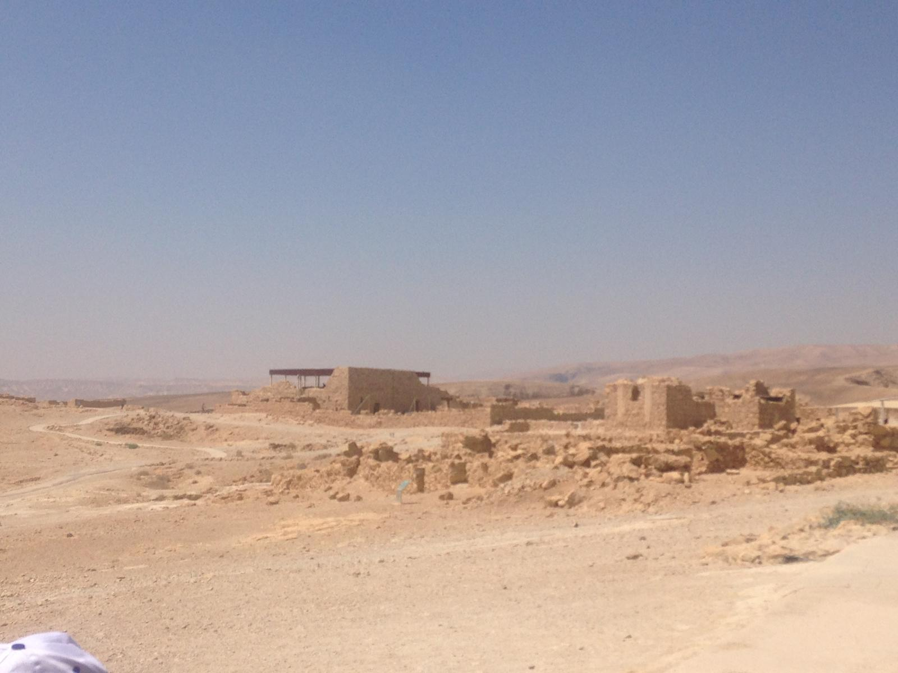
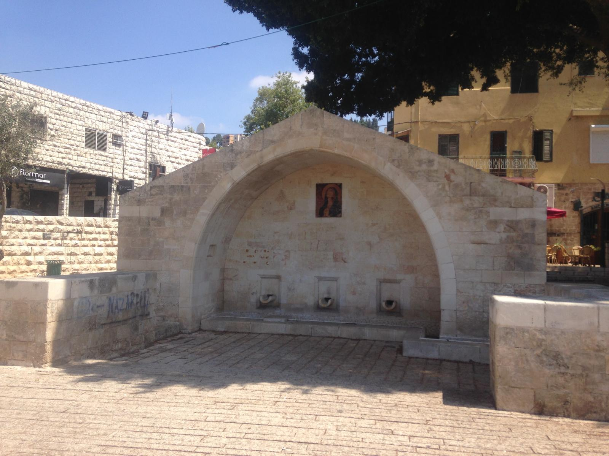
There are no direct flights from Ireland to Israel — you'll connect through a European hub. Dublin to Tel Aviv via Amsterdam, London or Frankfurt are all common routes. Flight time is around 5-6 hours total.
Spring (March-May) and autumn (September-November) are the best times — comfortable temperatures, manageable crowds. Summer is very hot, especially in Jerusalem and the Dead Sea area. Winter can be surprisingly cold in Jerusalem.
For a first visit to Israel — especially a Christian pilgrimage — an organised tour is absolutely the right choice. The history and significance of every site is so layered that having a knowledgeable guide transforms the experience completely.
Many of the sites are active religious spaces — churches, synagogues, mosques. Shoulders and knees should be covered. Scarves and light layers are useful and appropriate throughout the trip.
Don't miss the chance to float in the Dead Sea — bring a swimsuit and old shoes as the salt crystals on the shore are sharp. Don't shave the day before as the salt water stings any cuts.
An eSIM is the easiest way to stay connected in Israel — download it before you travel and activate it on arrival. Essential for maps, translation and keeping in touch.
An organised tour is by far the best way to experience Israel — the history is so rich and the logistics of moving between sites so complex that having everything arranged makes an enormous difference. TourRadar has excellent Holy Land and Israel tours for every type of traveller.
Disclosure: Affiliate link — if you book through it we may earn a small commission at no extra cost to you.
Download your Israel eSIM before you travel — no need to find a local SIM on arrival. Essential for maps and navigation around Jerusalem and the wider country.
Disclosure: Affiliate link — if you book through it we may earn a small commission at no extra cost to you.
Jerusalem walking tours, Dead Sea experiences, Masada tours, Tel Aviv city tours and much more.
Disclosure: If you book through these links we may earn a small commission at no extra cost to you.
What to pack for Israel
Shoulders and knees covered for religious sites — light layers work perfectly in Israel's climate.
View on Amazon →Jerusalem's Old City is cobbled and hilly — you'll walk a lot. Good shoes are essential.
View on Amazon →Israel is sunny and hot — the Dead Sea area especially. High SPF is non-negotiable.
View on Amazon →Long days of sightseeing drain batteries fast — keep yours topped up for photos and maps.
View on Amazon →Israel uses Type H plugs — different to Ireland and most of Europe. Don't get caught out.
View on Amazon →Perfect for carrying water, sunscreen and layers on long sightseeing days.
View on Amazon →Disclosure: Amazon affiliate links. We may earn a small commission if you buy through them.
Common questions
Israel is one of the most extraordinary destinations on earth — deeply moving, historically overwhelming and unlike anywhere else. An organised tour is the best way to experience it. Check TourRadar for current options and always verify the latest travel advice before booking.
Affiliate disclosure: links on this page may earn us a small commission at no cost to you. Always check current travel advice before visiting Israel or the wider region.